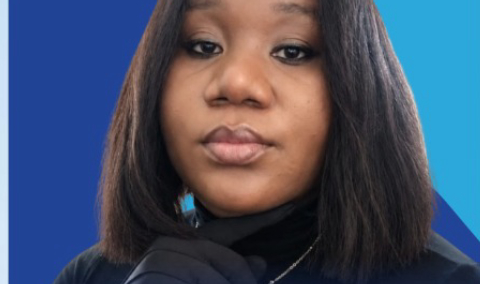

Ms. Perpetual-Love Uduma NBDSP
Principal Consultant, Auxilium Max Company LTD — Business Venture Studio
Facilitates Module 1 (Mindset Transformation & Personal Effectiveness), Module 5 (Enterprise Discovery & Opportunity Identification) and co-facilitates Module 11 (Business Packaging, Pitch Development & Investor Readiness).